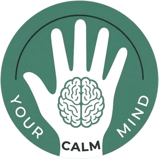

Про практику
Неоорбітальна медитація
Практика заспокоєння розуму та внутрішнього зосередження.
Повна інструкція: як вибрати мантру, провести її по тілу по колу та перейти до внутрішньої тишини.
Дивитися технікуПро концепцію практики
Що це за практика
Неоорбітальна медитація спрямована на глибоке заспокоєння розумової активності, зменшення внутрішнього діалогу та досягнення стану внутрішньої тишини.
На відміну від класичних медитацій на концентрацію (наприклад, шаматхи), де головне завдання - утримувати увагу на певному об'єкті, тут використовується інший принцип: послідовне переміщення подумки промовлюваної мантри по визначеній траєкторії тіла.
Основна ідея практики - поступово переключити увагу зі звичного потоку думок на повторення нейтрального слова, а потім провести це повторення через визначені точки тіла.
За суб'єктивними відчуттями практикуючих, це може супроводжуватися
- значним зменшенням кількості думок;
- послабленням або повним припиненням внутрішнього діалогу;
- відчуттям внутрішньої тишини;
- відчуттям наповненості, тепла або руху енергії в тілі;
- станом глибокого розслаблення та своєрідного перезавантаження розуму.
Відчуття індивідуальні. Неоорбітальна медитація - авторська практика, і описані ефекти ґрунтуються на суб'єктивному досвіді, а не на встановлених наукових дослідженнях саме цієї техніки.
Особливості та частота
Скільки і як часто практикувати
Практика відрізняється від м'якших технік - спостереження за диханням або звичайного розслаблення. Вона передбачає інтенсивне зосередження уваги і може відчуватися як глибша.
Тому не варто прагнути виконувати її якнайчастіше або збільшувати тривалість сеансів.
- 20 хвилинтривалість сеансу
- до 2 разівна день
- ранок і вечіроптимальний час
Цього цілком достатньо для регулярної практики.
Тут доречна аналогія з м'ятним чаєм: одна чашка може бути приємною і корисною, але велика кількість не обов'язково принесе додаткову користь. У медитації також важлива помірність.
Якщо під час практики виникає дискомфорт, запаморочення або неприємні відчуття, слід припинити її та повернутися до звичайного стану.
Положення тіла
Без лотоса й спеціальної підготовки
Одна з переваг техніки - відсутність суворих вимог до положення тіла. Не обов'язково приймати позу лотоса або використовувати спеціальні медитативні положення.
- сидячи на стільці
- у кріслі
- лежачи
- стоячи
- у громадському транспорті
Головна умова - зручне положення, у якому можна спокійно утримувати увагу на практиці.
Не рекомендується виконувати медитацію під час керування автомобілем, роботи з механізмами або будь-якої іншої діяльності, що потребує постійної концентрації та швидкої реакції.
Вибір персональної мантри
Слово, яке нічого не означає
Перший і один із найважливіших етапів - вибір мантри. Мантрою в цій практиці називається слово, яке людина подумки повторює протягом усієї медитації.
Це може бути практично будь-яке слово: назва місця, ім'я людини, «тепло», «добро» або будь-яке інше коротке слово.
Однак є важлива умова: найкраще вибирати слово, яке не викликає жодних емоцій та асоціацій.
Чому це важливо. Якщо мантра пов'язана з приємними спогадами, людьми або подіями, мозок може мимоволі переключатися на пов'язані з нею образи та асоціації. У результаті увага буде спрямована не лише на повторення слова, а й на спогади, що виникають. Тому для цієї техніки краща максимально нейтральна мантра.
Три критерії при виборі
-
Емоційна нейтральність
Слово не повинно викликати ні позитивних, ні негативних емоцій.
-
Відсутність асоціацій
Воно не повинно нагадувати про конкретних людей, події або ситуації.
-
Комфортне звучання
Слово повинно легко промовлятися подумки, не викликати внутрішнього опору або дискомфорту.
Бажано підібрати індивідуальну мантру, яка відповідатиме всім трьом критеріям.
Техніка виконання
Шість етапів одного кола
Практика складається з кількох послідовних етапів: від першої хвилини зосередження до спокійного повернення до звичайного стану.

-
Первинне зосередження
Прийміть зручне положення і заплющте очі. Почніть подумки повторювати вибрану мантру.
Не потрібно підбирати певний ритм чи швидкість. Повторюйте слово так, як вам зручно: швидко, повільно або з невеликими проміжками.
Завдання перших 2-3 хвилин - утримувати увагу виключно на мантрі, поступово відволікаючись від сторонніх думок.
На цьому етапі мантра подумки промовляється у звичному просторі голови, як звичайна внутрішня мова.
-
Мантра в області між бровами
Після 2-3 хвилин повторення уявіть, що мантра переміщується в область між бровами. Продовжуйте подумки промовляти слово, але тепер уявляйте, що його внутрішнє звучання знаходиться саме в цій точці.
Не потрібно фізично напружувати м'язи обличчя або намагатися викликати якісь відчуття. Достатньо спрямувати туди свою увагу.
-
Рух вниз по передній частині тіла
Продовжуючи подумки повторювати мантру, починайте поступово переміщувати її вниз за траєкторією:
- Область між бровами. Початкова точка переміщення.
- Область носа. Мантра подумки опускається до кінчика носа.
- Область горла. Переміщуємо увагу до горла і ненадовго затримуємося.
- Область сонячного сплетіння. Продовжуємо рух вниз і робимо невелику зупинку.
- Область нижче сонячного сплетіння. Поступово опускаємо мантру далі.
- Область нижче пупка. Ненадовго затримуємо увагу в цій точці.
- Нижня точка таза. Завершуємо рух по передній частині тіла.

Сім точок передньої лінії. На кожній точці мантра продовжує звучати. Для тих, хто знайомий із системою чакр, ці точки можна співвіднести з відповідними енергетичними центрами. Іншим достатньо орієнтуватися на описані анатомічні області.
На кожній точці продовжуйте подумки повторювати мантру. Не потрібно поспішати, але й надмірно довго затримуватися в окремих місцях не слід.
-
Рух вгору по хребту
Після досягнення нижньої точки таза починається зворотний рух. Тепер подумки ведіть мантру вгору вздовж хребта, поступово повертаючись до верхньої частини голови.
Рухайтеся послідовно, не поспішаючи, уявляючи, як мантра піднімається вздовж хребта і досягає маківки. Після цього цикл завершується і починається наступне коло.

Підйом іде вздовж хребта до маківки, без довгих зупинок у проміжних точках. Під час руху вгору не потрібно надовго зупинятися в проміжних точках. Основна увага приділяється безперервному руху мантри за заданою траєкторією.
-
Перехід у стан внутрішньої тишини
Під час другого кола або наступних повторень може статися зміна: внутрішній голос, яким ви подумки промовляєте мантру, поступово стає тихішим.
У якийсь момент внутрішнє промовляння може практично зникнути або повністю припинитися.
Якщо це сталося, не потрібно намагатися повернути внутрішній голос або спеціально продовжувати промовляти мантру. Дозвольте цьому стану зберігатися природно.
Вважається, що саме в цей момент досягається одна з основних цілей практики - послаблення внутрішнього діалогу та перехід до стану розумової тишини.
-
Завершення практики
Після припинення внутрішнього промовляння залиштеся в цьому стані ще приблизно на 5 хвилин. Не потрібно нічого спеціально робити, аналізувати або намагатися викликати додаткові відчуття.
Просто спостерігайте:
- за станом тіла;
- за внутрішніми відчуттями;
- за звуками довкола;
- за думками, що виникають і зникають.
Очі можна трохи приплющити, поступово повертаючи увагу до простору навколо. Завершуйте практику спокійно, без різкого перемикання.


Основні принципи
Що важливо пам'ятати
Шість положень, без яких техніка втрачає сенс і перетворюється на посилене зосередження.
Нейтральна мантра
Чим менше слово викликає асоціацій, тим менше приводів для відволікання уваги.
Відсутність напруження
Не потрібно змушувати себе концентруватися або фізично відчувати рух мантри.
Послідовність
Дотримуйтеся заданої траєкторії: від області між бровами вниз по передній частині тіла, потім вгору вздовж хребта.
Природне припинення мовлення
Якщо внутрішній голос затихає, не потрібно його відновлювати.
Відсутність очікувань
Не слід намагатися штучно викликати певні відчуття або досягти результату будь-якою ціною.
Помірність
Не збільшуйте тривалість і частоту занять, прагнучи прискорити ефект.
Рекомендований режим
Параметри практики
Орієнтири, за якими зручно вибудувати регулярну практику.
| Тривалість | 20 хвилин |
|---|---|
| Частота | До 2 разів на день |
| Час | Ранком і ввечері |
| Положення тіла | Будь-яке зручне |
| Мантра | Індивідуальна, нейтральна |
| Первинне повторення | 2-3 хвилини |
| Завершення | Близько 5 хвилин |
Види практик
Які бувають медитації
Усі техніки на сайті розкладаються за тим, що саме тренує увагу: утримання на об'єкті, відкрите спостереження, доброзичливість, робота з тілом або повторення слова. За цією рамкою простіше вибрати, з чого почати.
-
Концентрація на одному об'єкті
Шаматха, рахунок дихання, увага на точці. Розум учать повертатися до одного й того самого й помічати момент, коли він пішов. Це основа для інших технік.
Шаматха -
Відкрите спостереження
Віпассана й практики усвідомленості: об'єкт не вибирають, а помічають усе, що з'являється, - звук, думку, відчуття, - без оцінки й без пошуку приємного.
Віпассана -
Доброзичливість
Метта й мудіта: подумки бажають добра собі й іншим. Тут тренується не стільки увага, скільки ставлення до себе й людей.
Метта й мудіта -
Робота з тілом
Сканування тіла, дихання хребтом, чакри, шамбхаві мудра. Увага спирається на тілесні відчуття або рухається тілом. Сюди ж належить неоорбітальна медитація.
Тілесні практики -
Мантра
Трансцендентальна медитація й неоорбітальна практика: розум займають нейтральним словом, щоб внутрішня мова стихла. Різниця в тому, що з цим словом роблять далі.
Як вибрати мантру -
Усвідомленість у русі та їжі
Повільна ходьба й усвідомлене харчування: увага тренується у звичайних діях, без окремого часу й подушки.
Ходьба й їжа
Це не сувора класифікація: одна практика часто поєднує кілька механізмів. Рамка потрібна, щоб вибрати точку входу, а не щоб розкласти все по полицях.
Уроки й традиції
Уроки медитації та духовні практики
Медитація - одна з давніх духовних практик, але сьогодні її можна робити і як світську вправу на увагу. Якщо ви шукаєте уроки медитації, ось маршрут на чотири тижні: без курсу, сертифіката й оплати.
-
Тиждень 1
Сканування тіла
Десять хвилин лежачи: увага проходить від стоп до маківки. Найпростіший вхід, який учить помічати відчуття без оцінки.
Сканування тіла -
Тиждень 2
Шаматха
Десять-п'ятнадцять хвилин на диханні: повертатися до вдиху й видиху щоразу, коли розум пішов. База для будь-якої концентрації.
Шаматха -
Тиждень 3
Неоорбітальна медитація
Двадцять хвилин із нейтральною мантрою й колом тілом. На цей момент уже є навичка повернення, тому довгий маршрут не розсипається.
Техніка -
Тиждень 4
Метта або усвідомлена ходьба
Виберіть те, що відгукується: доброзичливість до себе й інших або повільний крок. Важливо, щоб практика залишилася в житті, а не лише в плані.
Метта
Це не курс із сертифікатом і не заміна вчителю. Живий викладач потрібен там, де піднімається сильний матеріал: травма, паніка, тривалі ретрити. Для базових практик достатньо інструкцій і регулярності.
Порівняння
Неоорбітальна й трансцендентальна медитація
Ці практики часто плутають: обидві працюють із мантрою й обіцяють тишу в голові. Різниця - у маршруті уваги, ролі вчителя й походженні.
Трансцендентальна медитація (ТМ) - школа, яку Махаріші Махеш Йогі заснував у 1950-х роках. Практикуючого навчає сертифікований викладач і дає персональну мантру. Сесія триває близько 20 хвилин і повторюється двічі на день; мантру повторюють подумки, без руху тілом. Назва й метод викладання захищені як торговельні марки, навчання платне.
Неоорбітальна медитація - авторська практика цього сайту. Мантру вибирають самостійно за трьома критеріями: коротка, нейтральна, без асоціацій. Її не лише повторюють, а й проводять замкненою траєкторією тіла: вгору хребтом і вниз передньою лінією. Сеанс триває близько 20 хвилин, практикувати можна один або два рази на день. Окреме навчання не потрібне: інструкція відкрита.
Спільне в них - нейтральне слово й регулярність. Різне - що відбувається з мантрою, хто її призначає і з якої традиції виросла техніка. Неоорбітальна медитація не пов'язана з організацією ТМ і не є її варіантом.
| Параметр | Неоорбітальна | Трансцендентальна |
|---|---|---|
| Мантра | Своя, за трьома критеріями | Персональна, від викладача |
| Що роблять із мантрою | Повторюють і ведуть тілом | Повторюють подумки |
| Тривалість сесії | Близько 20 хвилин | Близько 20 хвилин |
| Частота | 1-2 рази на день | 2 рази на день |
| Навчання | Самостійно за інструкцією | Курс у сертифікованого викладача |
| Походження | Даоська орбіта й робота з мантрою | Ведійська традиція, школа Махаріші |
| Вартість | Безкоштовно | Платно |
Таблиця описує загальні риси шкіл, а не якість практик. Учителі й формати всередині ТМ теж бувають різними.
Часті запитання
Часті запитання про неоорбітальну медитацію
Коротко про те, що найчастіше питають перед першою сесією.
Що таке неоорбітальна медитація?
Авторська техніка заспокоєння розуму: нейтральну мантру подумки повторюють і проводять замкненим маршрутом тіла - вгору хребтом і вниз передньою лінією. Мета - знизити внутрішній діалог і прийти до тиші, не придушуючи думки.
Чим вона відрізняється від концентрації на диханні?
У концентрації увагу тримають на одному об'єкті - диханні або точці. Тут об'єкт рухається: мантра йде маршрутом, і розуму важче провалитися у випадкову думку.
Скільки треба практикувати, щоб помітити ефект?
Орієнтир - 20 хвилин один або два рази на день. Перші зміни зазвичай помічають через два-чотири тижні: стає легше ловити момент, коли розум пішов. Це суб'єктивний досвід, окремих досліджень саме цієї техніки немає.
Чи можна практикувати без учителя?
Так. Інструкції на сайті достатньо для базової практики. Учитель потрібен там, де піднімається сильний матеріал: травма, паніка, тривалі ретрити.
З чого почати, якщо я ніколи не медитував?
З десяти хвилин на день і простої практики: сканування тіла або шаматха. Неоорбітальну медитацію краще пробувати, коли вже є звичка повертати увагу: у неї довгий маршрут і більше простору для відволікання.
Чи допомагає практика від стресу й тривоги?
Розслаблення й уповільнення дихання справді знижують фізіологічне збудження, а регулярне тренування уваги змінює реакцію на стрес. Але це не лікування: при тривожному розладі або депресії практика йде разом із терапією і лікарем.
Це релігійна практика?
Ні. Техніка виросла з даоської роботи з тілом і мантрою, але не потребує віри, обрядів або належності до школи. Це вправа на увагу, а не віровчення.
Кому вона не підходить?
При тривозі, депресії, психозі в анамнезі, епілепсії та після черепно-мозкових травм варто спершу поговорити з лікарем. Якщо під час практики виникає запаморочення, біль або сильний дискомфорт, сесію припиняють.
Медитація - це духовна практика?
Історично так: майже всі техніки на сайті виросли з релігійних традицій - даоської, буддійської, ведійської. Але вірити в них не обов'язково: вправа працює з увагою й тілом, а традицію можна читати як культурний контекст.
Чи потрібні уроки медитації або можна вчитися самому?
Для базових практик достатньо покрокових інструкцій і регулярності. Уроки корисні, коли потрібен зовнішній ритм і зворотний зв'язок; учитель - коли піднімається сильний матеріал. Почати можна з маршруту на чотири тижні вище.
Це те саме, що трансцендентальна медитація?
Ні. Спільне - нейтральна мантра й регулярність. У ТМ мантру дає викладач і її лише повторюють; тут мантру вибирають самостійно й ведуть тілом.
Як правильно: неоорбітальна чи неорбітальна?
Правильно - неоорбітальна: від «нео» й «орбіта». Варіант «неорбітальна» трапляється в пошуку, але це помилка.
Висновок
Не боротися з думками
Неоорбітальна медитація - це техніка, в основі якої лежить послідовне переміщення нейтральної мантри по визначеній траєкторії тіла з подальшим переходом до стану внутрішньої тишини.
Її головна особливість полягає не в концентрації на одному об'єкті, як у класичних медитативних практиках, а в поступовому послабленні внутрішнього мовлення за допомогою спрямованої уваги.
Практика не потребує спеціальної підготовки, обладнання або певного положення тіла. Головне - правильно підібрати мантру, дотримуватися послідовності рухів і не намагатися форсувати результат.
Основний принцип: не боротися з думками, не придушувати їх і не намагатися силоміць зупинити розум. Потрібно просто дотримуватися техніки і дозволити процесу відбуватися природно.
Контакт
Питання щодо практики
olegzzl@zohomail.eu